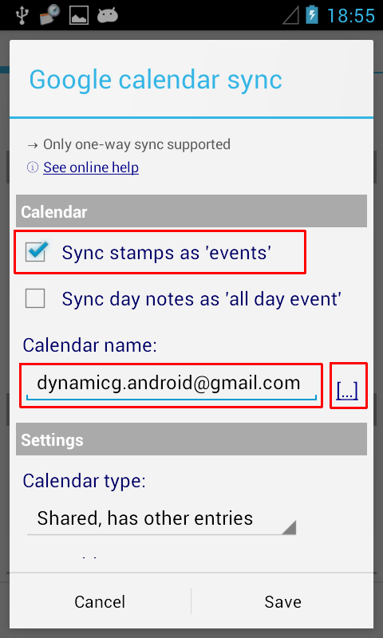

Time Recording
Calendar sync setup and troubleshooting
• Check your Android system settings and make sure your target account is marked for Calendar Sync
• Open the Calendar app and go to Menu / "Calendars to be displayed". Make sure your target calendar is visible and marked for sync
• Enable Calendar sync in the Time Recording app (see Menu / Preferences / Google Calendar Sync)

• Caution: when using Cyanogenmod Privacy Guard or App Ops make sure you assign calendar read and write access to the "Calendar Sync Plugin" (not the main "Time Recording Pro" app)